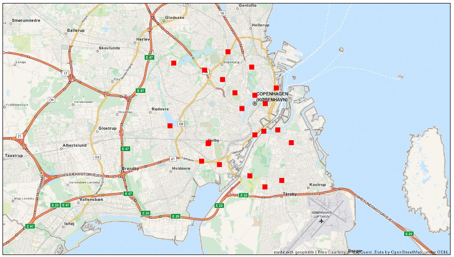

Final project for the Social Data Analysis and Visualization course
Introduction
The city that you will learn more about here is Copenhagen. What i want to investigate, and what my main dataset is centered around, is where and when we see traffic in the city. (A short video of my ealy progress - Final Assignment A) To do this i have found a dataset containing fixed traffic counts at specific places in copenhagen. The datasets contains data on car traffic from 2005-2014 and can give me a good estimate of the Copenhagen traffic. Combining this dataset with other datasets from the same website, i've come to better understand copenhagen trafic. Now i will share what i have found with you.Further information about motivation etc is found in this explainer notebook
Intro to the dataset
Going over the dataset i discovered that not every counting station were active every day of the year. There were periods of time where they wouldn't record anything at all. This ofcaurse makes sense, since the stations might be needing mainainge sometimes or other accidents could happen. Also the city might have been setting up new stations or taking down old stations throughout the years. Therefore I've plotted when each counting station has been active. These plots and more about them can be found here.Where to find the counting stations:
It is important to know where the stations are placed in the city. If they are all placed in the same general area the data will not be able to give me a picture of the city traffic as a whole. I've used python to plot the stations into a geoplot showing me where the stations are located. As we can see, the 22 counting stations are quite evenly spread out. They do not capture all the highways going in and out of the city niether are they only focused on smaller roads in the city. I would say that they will be able to give me a good estimate of the daily traffic in the city.

Counting staistics
Going through the dataset I've found some interesting statistics:
Here you can find a lot more interesting statistics about the dataset.
Heatmap changing with time for a certain day